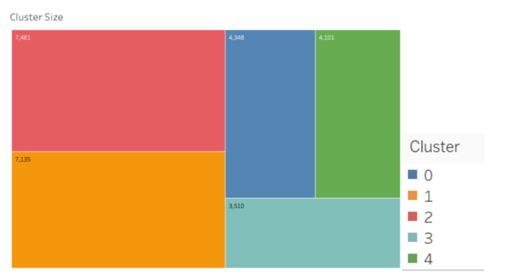
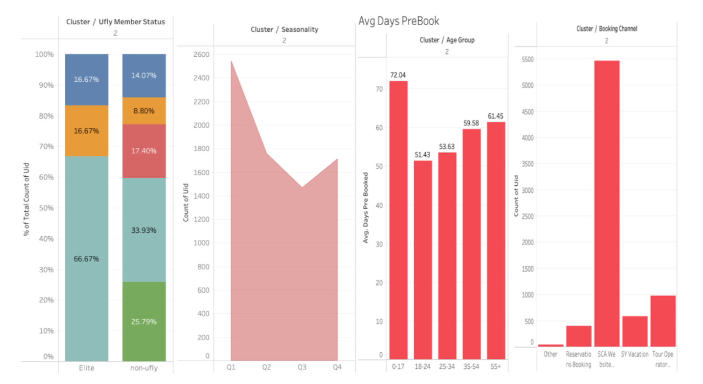
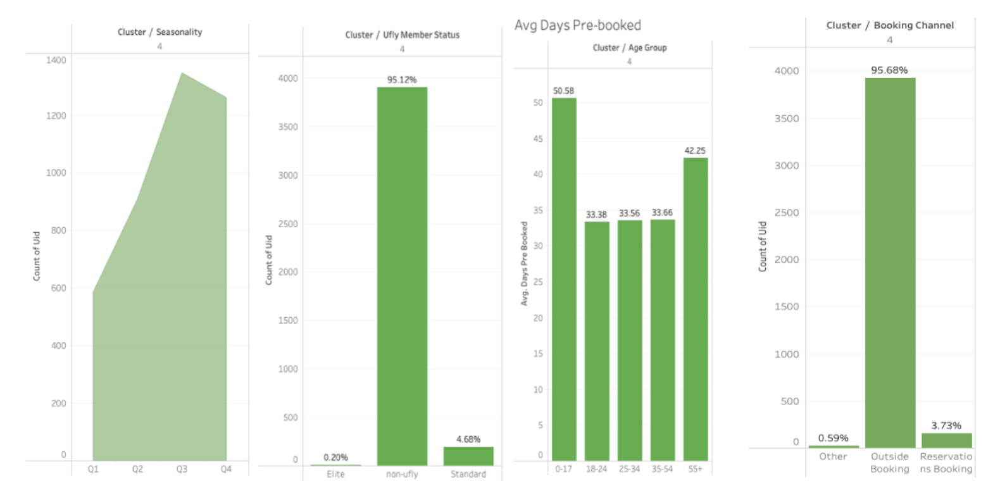

Sun Country Airlines Business Analysis and Targeted Marketing Insights
📌 Project Purpose
This project aims to segment the diverse customer base of Sun Country Airlines by applying unsupervised learning techniques—specifically, K-Means Clustering—on real-world booking data. Through detailed analysis of features such as age group, Ufly membership status, seasonality, booking behavior, departure-destination patterns, and pre-booking intervals, we identified five distinct traveler segments. The goal is to derive data-driven insights that can inform personalized marketing strategies, improve customer experience, and ultimately align Sun Country’s services with evolving consumer needs. By leveraging cluster-based segmentation and business intelligence, this project provides the airline with a framework for smarter, more targeted decision-making.
📊 Dataset Overview
Data Source
sample_data_transformed.csv – Raw customer booking dataset with both categorical and numeric features.Clustering Data.csv – Cleaned and encoded version where categorical variables are transformed into numeric form.final_dataframe_clusters.csv – Final dataset including assigned cluster labels for each customer.
Data Dictionary
| Column Name |
Description |
uid |
Unique identifier for each customer |
age_group |
Categorized customer age group (e.g., 18–24, 25–34, etc.) |
ufly_member |
Whether the customer is enrolled in the Ufly Rewards program (1 = Yes, 0 = No) |
roundtrip |
Indicates whether the booking was a round trip (1 = Yes, 0 = No) |
group_size |
Number of passengers in the booking group |
group |
Travel group indicator: 1 = group, 0 = solo |
seasonality |
Quarter in which the travel occurred (Q1 to Q4) |
days_prebooked |
Days between the booking date and the departure date |
true_origins |
City or airport of origin |
true_destination |
Landing location for the flight |
final_destination |
Final stop in a multi-leg journey |
cluster |
Cluster label assigned via K-Means clustering |
ğŸ› ï¸ Methodology
1. Data Preprocessing
- Checked and handled null values; normalized numerical columns for consistency.
- Encoded categorical features such as
age_group, trip type, seasonality for clustering use.
2. K-Means Clustering
- Used the elbow method to determine the optimal number of clusters (K=5).
- Performed K-Means clustering to segment customers based on travel behavior and demographics.
- Assigned a cluster label to each customer and appended it to the final dataset.
3. Visualization & Interpretation
To understand cluster characteristics, we visualized key variables including:
- Age distribution and group size across clusters
- Trip type (group vs solo), roundtrip status, and booking season (Q1–Q4)
- Days prebooked and booking channel preferences
📌 Summary
Cluster Size Overview

The dataset was segmented into five clusters of varying sizes, with Cluster 1 and Cluster 2 representing the largest customer groups.
Cluster 0 – Family & Organized Travelers
This group includes families with children and older adults (age 55+). They plan trips well in advance, typically in Q1 and Q4, and book through Sun Country’s website or travel agents. Top destinations include warm winter locations.
Cluster 1 – Career-driven Travelers
These passengers are working professionals (25–54), often traveling for business. They use external platforms to book year-round, often prioritizing economy options and flexibility.
Cluster 2 – Planned & Seasonal Travelers

Middle-aged and senior travelers who favor early bookings and tend to travel in the winter. They show high loyalty to Sun Country’s own booking channels and frequently fly to Florida and Mexico.
Cluster 3 – Seasonal Travelers & Self-service Bookers
Primarily non-members who prefer direct bookings and travel during Q3 and Q4. This cluster contains elderly explorers, career balancers, and independent young adults.
Cluster 4 – Independent & Improvised Visitors

A diverse group who tends to avoid loyalty programs. They often book last-minute, travel mostly in summer, and rely on third-party platforms for ticket purchases.
💡 Insights & Recommendations
🔠Behavioral Insights by Cluster
- Cluster 0 – Family & Organized Travelers: These travelers plan far in advance, prefer Q1/Q4 trips, and book through official channels. They are cost-conscious and responsive to family travel deals.
- Cluster 1 – Career-driven Travelers: Year-round travelers booking through agencies, likely for work. Prefer flexibility, value, and on-time performance.
- Cluster 2 – Planned & Seasonal Travelers: Often fly to warm destinations like Florida/Mexico. Highly loyal to SCA's website; most proactive planners in the data.
- Cluster 3 – Seasonal & Self-service Bookers: Non-members booking Q3/Q4 trips. Independent explorers and occasional travelers who book through the website but aren’t loyal.
- Cluster 4 – Independent & Improvised Visitors: Last-minute bookers, minimal loyalty, more price-sensitive, and heavy OTA usage. Likely leisure travelers seeking deals.
📊 Strategic Recommendations
- Personalized Promotion by Cluster: Target Cluster 0 with early-bird family bundles, and Cluster 4 with last-minute flash sales or mobile-exclusive coupons.
- Loyalty Program Expansion: Build low-barrier rewards for Clusters 1 & 2 who prefer direct booking. Incentivize them with flexible rescheduling and loyalty points.
- Optimize Seasonal Route Planning: Increase capacity to warm weather locations during Q1 and Q4, especially for Clusters 0 and 2.
- Mobile-first Booking Experience: Enhance mobile UI for Clusters 3 & 4, who favor independence. Push in-app upgrades and upsells.
- Bundle Offers for Group Travel: Group travel bundles (flight + hotel + bag) can increase conversions for Clusters 0 and 2.
- Predictive Dynamic Pricing: Use cluster behavior patterns in pricing models (e.g., charge higher for short lead-time Cluster 4, offer discounts for early-bird Cluster 0).
- OTA Partnership Strategy: Turn OTA-reliant Clusters (esp. Cluster 4) into loyal customers by offering direct booking incentives (e.g., $10 off if switching to website).
- Recluster Quarterly: Re-evaluate clusters regularly to track trends and adjust strategy post-COVID or during holiday travel seasons.
🧰 Tech Stack
- Python: Primary programming language used for data preprocessing, clustering, and visualization
- Pandas: Data manipulation and feature engineering on the booking dataset
- NumPy: Numeric operations and array transformations during standardization
- Scikit-learn: Core machine learning library used for K-Means clustering, Elbow Method, and Silhouette Score
- Matplotlib & Seaborn: Created visualizations to explore cluster behaviors and patterns
- Plotly: Used to generate interactive maps for cluster-based geographic insights
- Jupyter Notebook: Environment for iterative development, analysis, and documentation
📠Attachment
You can download the supporting datasets below for reference or further exploration:
↠Back to Home